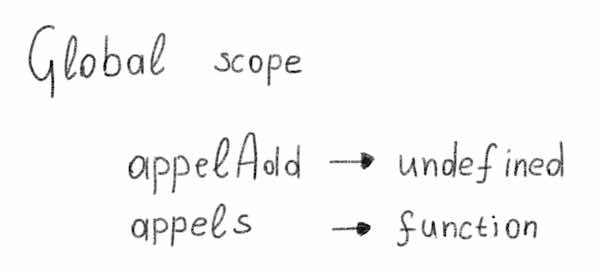
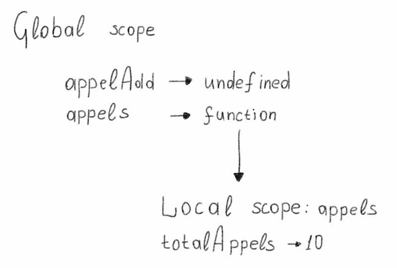
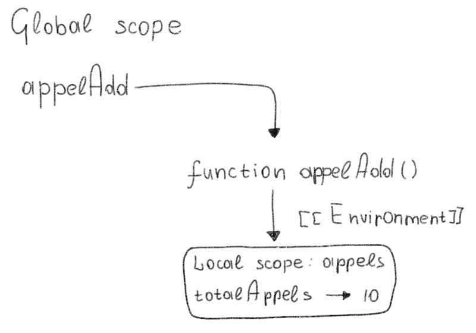
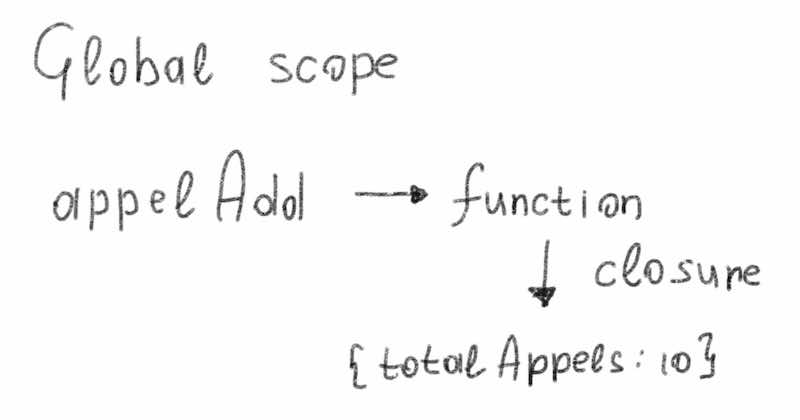
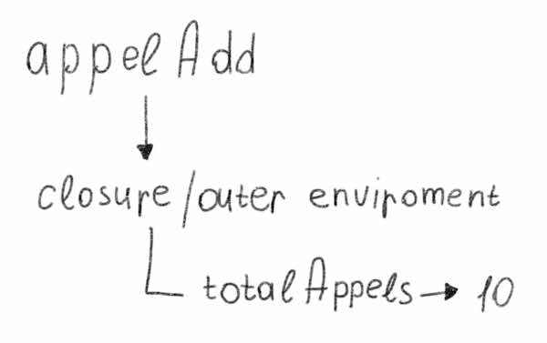

Simple example:
const addOne = function () {
let num = 10;
return function () {
return console.log(num++);
};
};
const exp = addOne();
exp(); // 10
exp(); // 11
exp(); // 12
const expAdd = addOne();
expAdd(); //?
expAdd(); //?
expAdd(); //?Try to solve this example on your own:
let appelAdd;
const appels = function () {
const totalAppels = 10;
appelAdd = function () {
console.log(totalAppels + 1);
};
};
appels();
appelAdd(); //?- First, the global lexical environment is created:

- Then,
appels()is called.

- Inside
appels, a new function is created and assigned toappelAdd:
appelAdd = function () {
console.log(totalAppels + 1);
};
appels()→ finished. But its lexical environment is still accessible:

- Then,
appelAdd()is called. JavaScript executes the function.

Main rule: a function remembers where it was created. The [[Environment]] reference is set once and for all when the function is created.